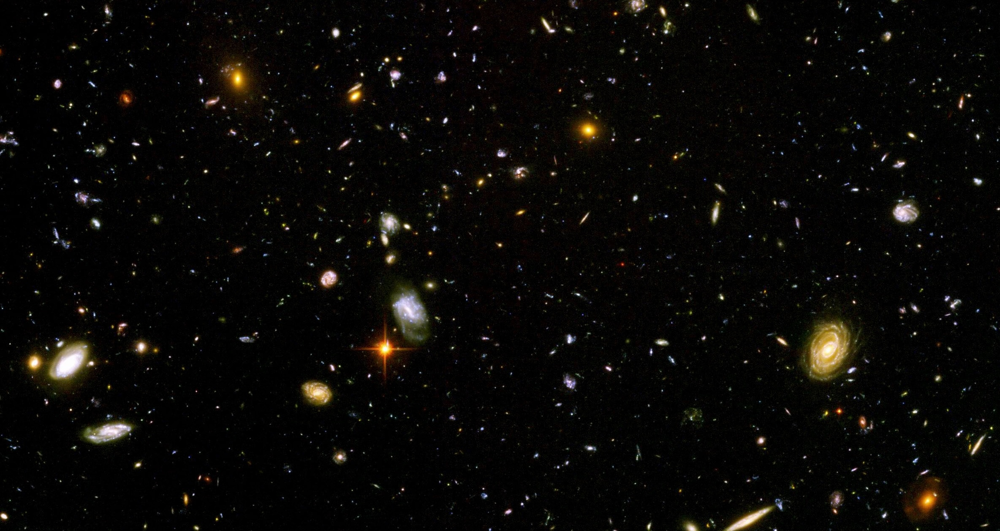
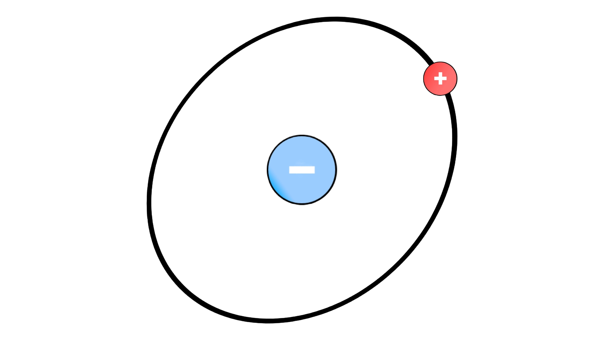

13.8 billion years ago, when the Big Bang occurred and the universe was formed, we didn't have planets, stars, galaxies, asteroids, or moons immediately. It took time; the universe is like a pie—you need to bake it first. What were the ingredients? Well, I'm glad you asked: there was an unimaginable amount of matter all condensed at one point in space. Yet there wasn't just matter at the birth of the cosmos, but antimatter as well—normal matter's evil twin.
“Evil” might not be the perfect word to describe it. Matter and antimatter are a lot like Romulus and Remus—both wanted to rule Rome, but in the end, only one could be king. Both matter and antimatter wished to make up the universe. The problem was that when they met, they annihilated each other, turning into pure energy. Before I get too deep into this blog, let me answer the question of what antimatter really is: it's simply a mirror image of the fundamental particles that make up atoms—protons, neutrons, and electrons. There are antiprotons, antineutrons, and positrons (antielectrons). They have the same mass as their matter counterparts, except they have a different charge. For example, the antiproton is the same as a normal proton, except it has a negative charge instead of a positive one.
As I mentioned before, at the moment of the Big Bang, there was both matter and antimatter. What I didn't mention, however, was that there were nearly equal amounts of both. There were trillions upon trillions of normal matter, and the same for antimatter. Now the problem: matter and antimatter annihilate when they meet and turn into energy. If there were nearly equal amounts of both, why isn't the modern-day cosmos just a bunch of photons—pure energy flying around aimlessly?
Well, it turns out that at the birth of the universe, for every billion pieces of antimatter there was a billion-and-one pieces of normal matter. When those pairs annihilated, that extra one piece of matter was left over. That one-in-a-billion excess is what our universe is made of. That one-in-a-billion.
Short answer: yes. Long answer: yes… but also no? Antimatter isn't something you can just buy at Home Depot—but I think you already knew that. Antimatter has been created before in particle accelerators—gargantuan machines that accelerate particles to 99.99999% of the speed of light using magnetic fields. Scientists can make antimatter there, then store it and run experiments.
The problem is, if we try to use antimatter for a real-world application, unless we have some ingenious method to keep it from contacting normal matter, it will annihilate. For now, we are simply stuck with normal matter, which is a shame since I was looking forward to eating some antimatter toast without blowing up.
What if, instead of there being a matter advantage, it were antimatter? Well… we don't know what that would have looked like, but with the limited knowledge we have today, it might have looked the same. As a matter of fact, scientists at the Large Hadron Collider in Switzerland have already created antihydrogen—hydrogen made of antimatter. Instead of a positive nucleus and a negative electron cloud, the nucleus would carry a negative charge and be surrounded by a positron cloud—the exact opposite of a hydrogen atom.
Just imagine: antigalaxies, antistars, antiplanets, and maybe even anti-black holes. It would be an antiverse. Though at that point I don't think it would be “anti”—that would just be the cosmos. From our current understanding of antimatter, there would be no observable difference between our universe and an antiverse. But this is all pure speculation. We truly have no idea how antimatter behaves on macroscopic scales, and that's what scientists are trying to find out.